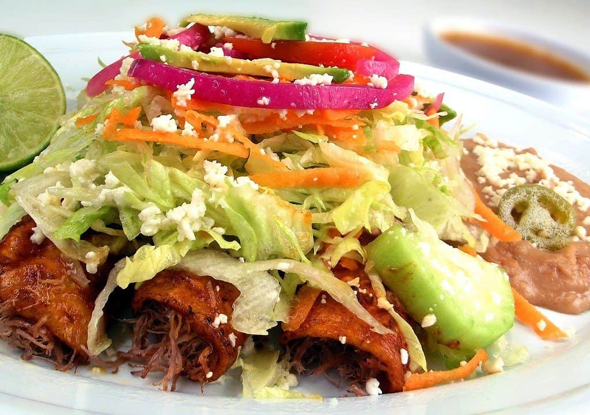

Las enchiladas hacen por sí solas un plato completo. Son voluminosas, deliciosas y muy balanceadas
cuando el relleno incluye alguna carne
La receta de enchiladas rojas con pollo es de las más comunes en México, aunque hay cientos de maneras
diferentes de preparar este plato. Una de las ventajas de las enchiladas es que no necesitan acompañamientos.
Se pueden servir con arroz o frijoles como guarnición, pero si no, no pasa nada.
Consejo
Los chiles más utilizados para esta receta son de árbol, ancho y guajillo.
Para quienes no les gusta el picante, se pueden reemplazar con ajíes dulces o chiles de los que no pican.

Enchiladas rojas
Ingredientes
12 tortillas de maíz.
1 pechuga de pollo limpia y sin grasa.
1 cebolla pequeña.
1 diente de ajo.
4 tomates rojos o jitomates.
2 chiles rojos.
1 hoja de laurel
1 lechuga de tipo romana.
1/2 taza de Crema ácida o agria nata.
Queso fresco blanco
Aceite de sabor neutro.
Preparación
En una cacerola con agua caliente, cocinar la pechuga de pollo con sal y la hoja de laurel, hasta que
la carne pegada al hueso haya perdido el tono rojizo-rosado.
Sacar la pechuga del agua y deshebrar la carne con ayuda de dos tenedores.
Lavar los chiles y tomates. Abrir los primeros y quitar las semillas, el tallo y la vena blanca.
Pelar la cebolleta y los ajos.
Poner a asar el ajo, la cebolla, los chiles y los tomates.
Una vez asados, meter todos los vegetales a licuar, con un par de buenas cucharadas de crema. Añadir un
poco de sal. Si hace falta un poco de líquido para que la licuadora funcione bien, se pueden añadir algunas
cucharadas del caldo en el que se coció el pollo.
Después de licuar, probar y corregir la sazón, si es necesario.
Pasar la salsa por un colador para quitar las semillas y que quede bien líquida.
Verter la salsa en una cacerola y cocinar a fuego bajo.
Mientras tanto, limpiar la lechuga y cortar tiras por el equivalente a dos o tres tazas.
Disponer un par de cucharadas de aceite en un sartén, y dorar las tortillas previamente mojadas en la salsa
(una a una, sólo un poco hasta que se suavicen).
Rellenar cada tortilla con un poco de pollo y doblar.
Disponer al menos 3 tortillas por plato. Se pueden cubrir con más salsa, al gusto.
Cubrir con las tiras de lechuga, lo que reste de la crema de leche, y finalmente espolvorear con queso fresco.